#340 講堂舞台袖 v2 と現行舞台
同じ保存地点、人物、商品/イベント、#304小物原画候補を重ねた本編GameShell。v2は舞台につながる通路の候補で、#29の最終採用ではない。
1440×900 / 1024×768のブラウザ実寸。seed97は購買・休憩、seed42はイベント。保存状態から到着し、再読込後に撮影。自然42地点プレイ・物理iPadではない。
seed 97 · Act 3 · 11F 購買
#304 校内購買棚と背景の接地・遮蔽・舞台への動線を比較。
現行 · 客席舞台 · 1440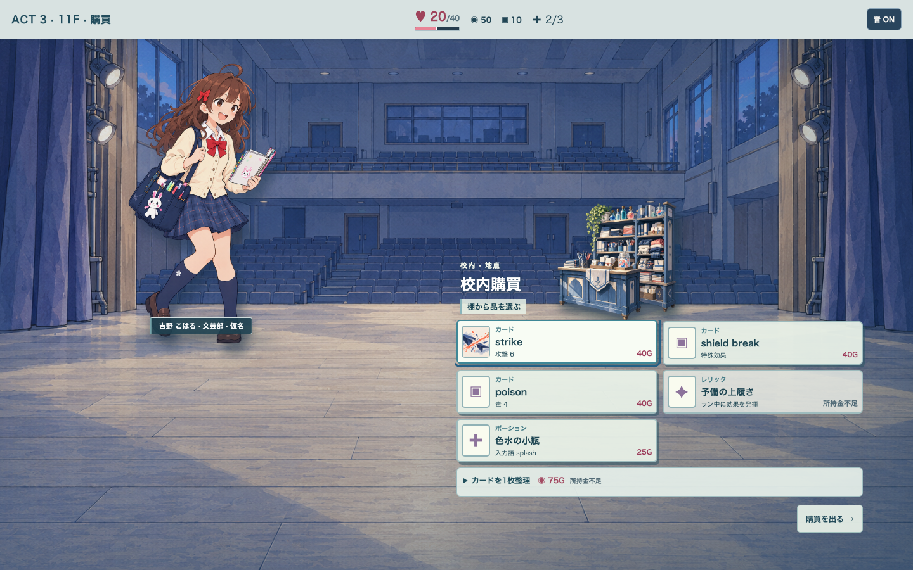
候補 · 舞台袖 v2 · 1440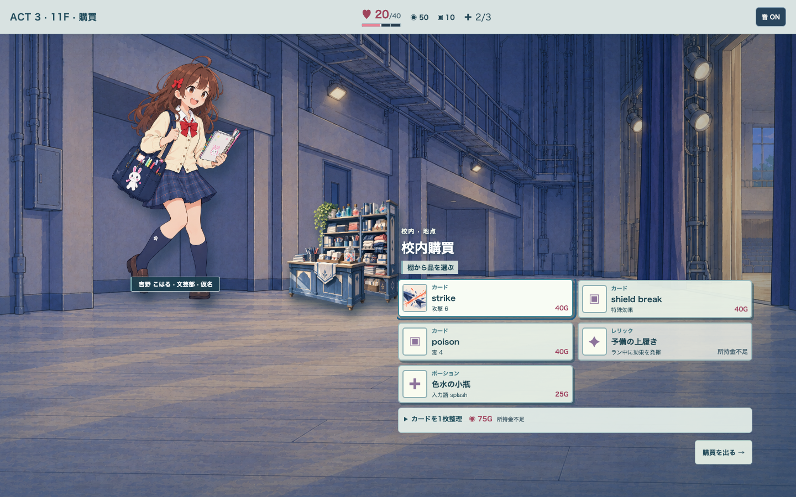
現行 · 客席舞台 · 1024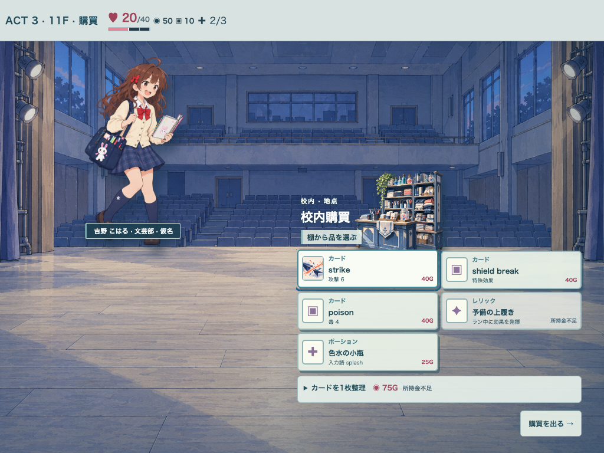
候補 · 舞台袖 v2 · 1024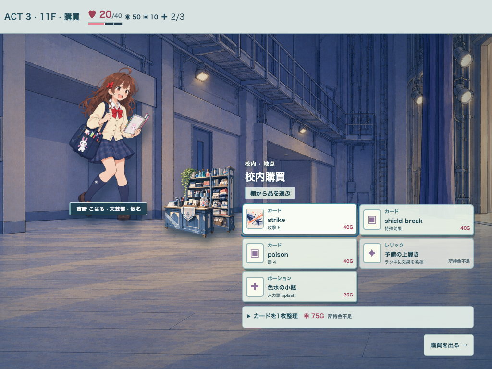
seed 97 · Act 3 · 12F 休憩
#304 休憩席と背景の接地・遮蔽・舞台への動線を比較。
現行 · 客席舞台 · 1440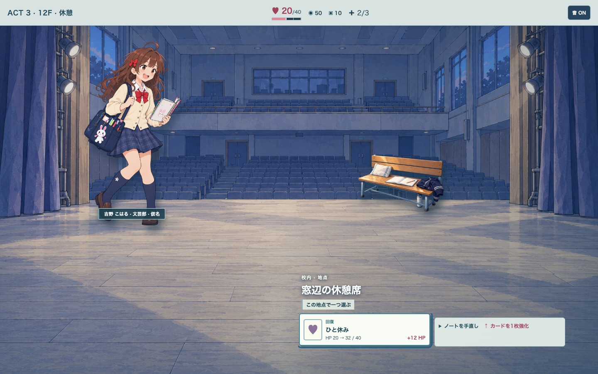
候補 · 舞台袖 v2 · 1440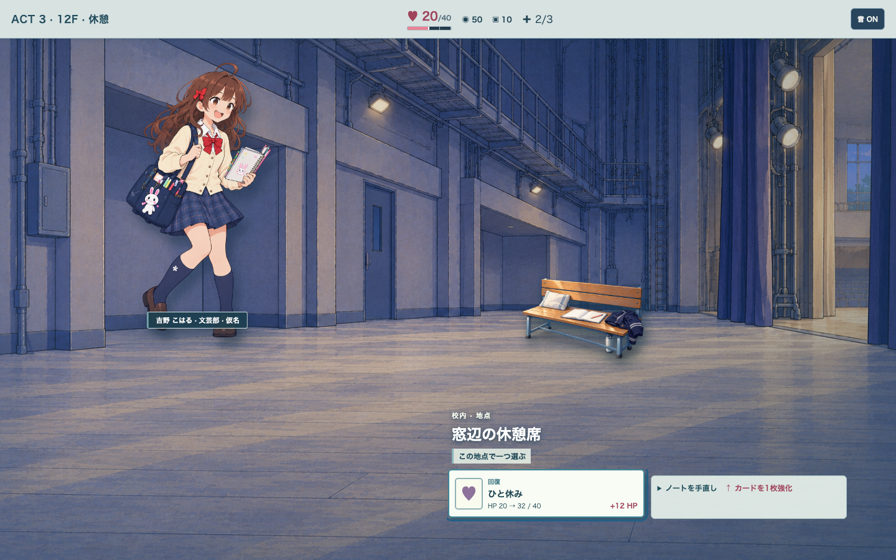
現行 · 客席舞台 · 1024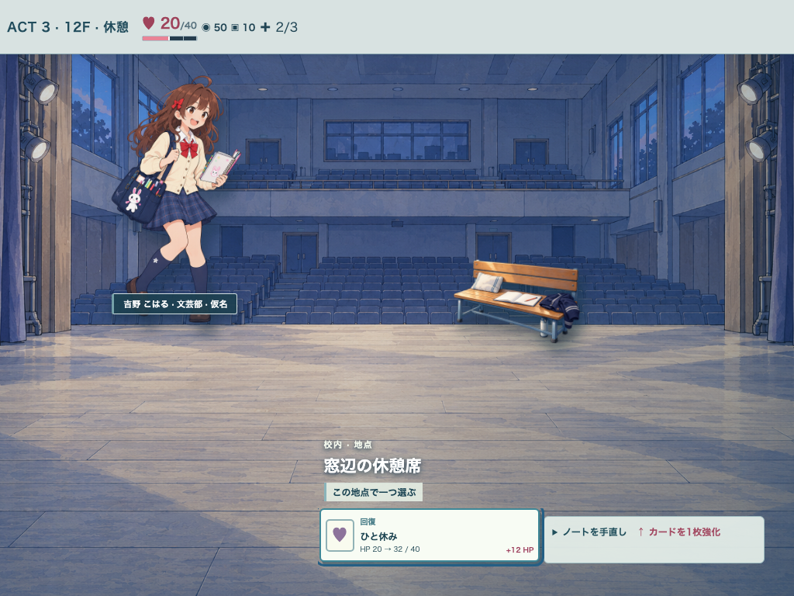
候補 · 舞台袖 v2 · 1024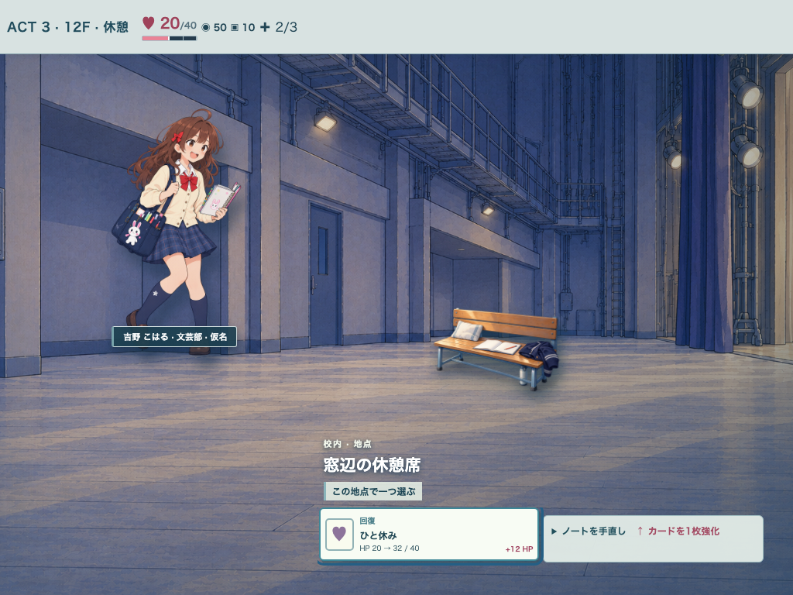
seed 42 · Act 3 · 11F イベント
#304 掲示板と背景の接地・遮蔽・舞台への動線を比較。
現行 · 客席舞台 · 1440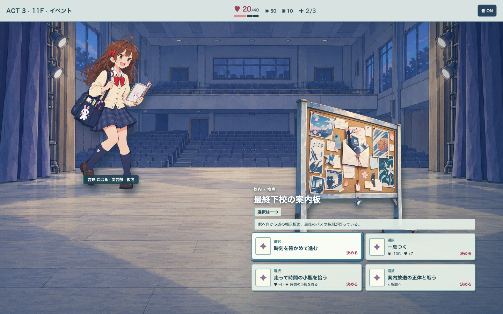
候補 · 舞台袖 v2 · 1440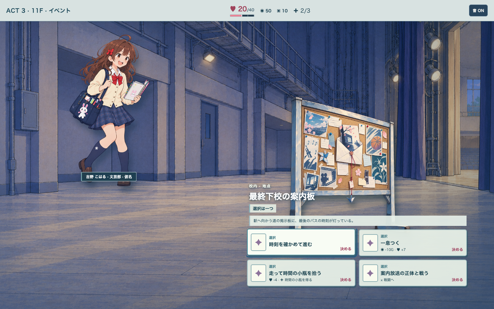
現行 · 客席舞台 · 1024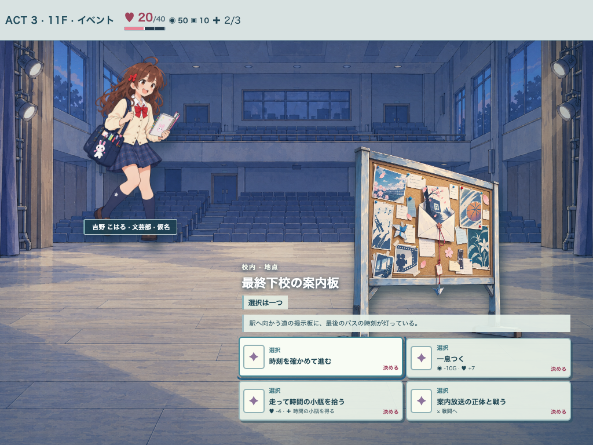
候補 · 舞台袖 v2 · 1024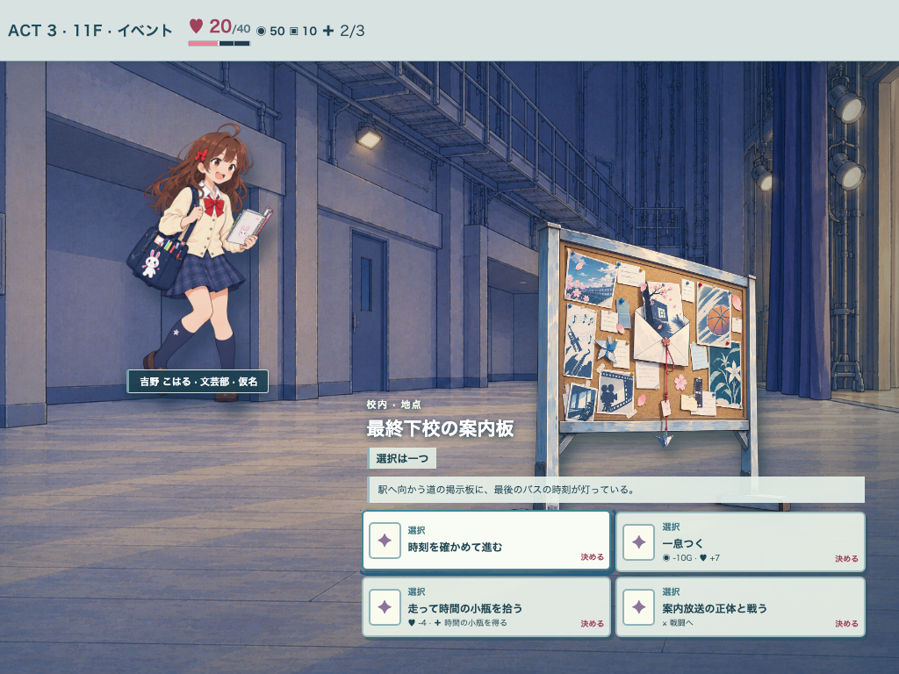